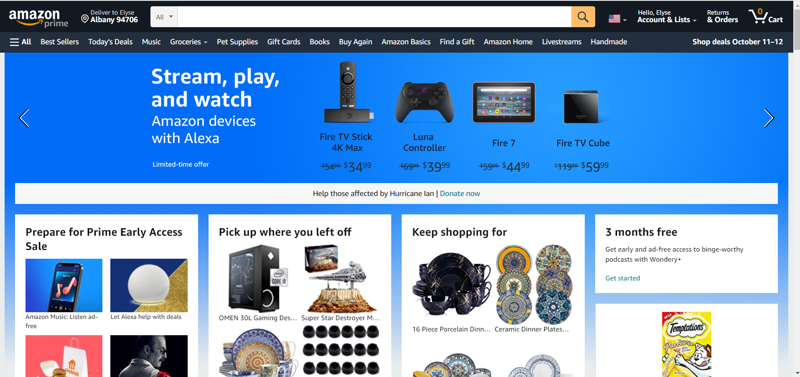
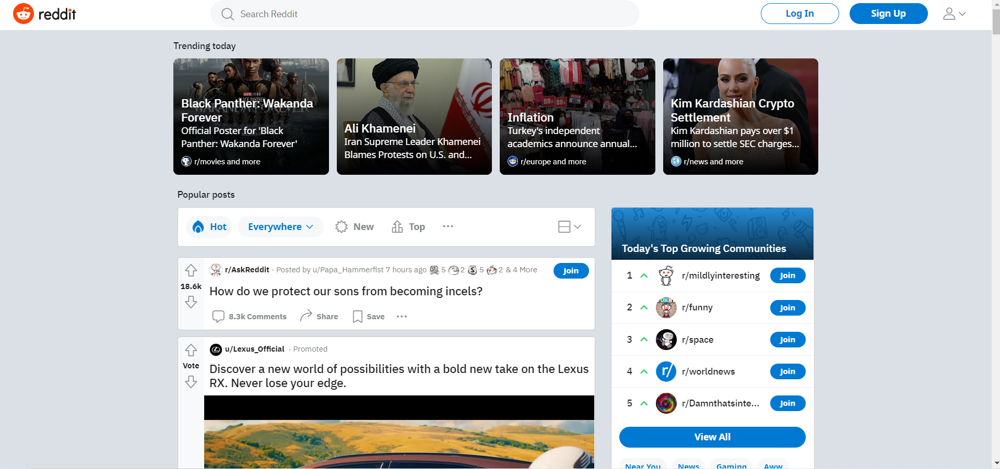
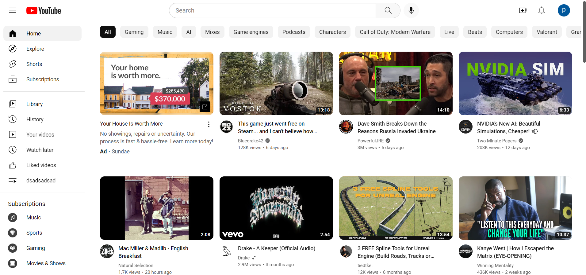
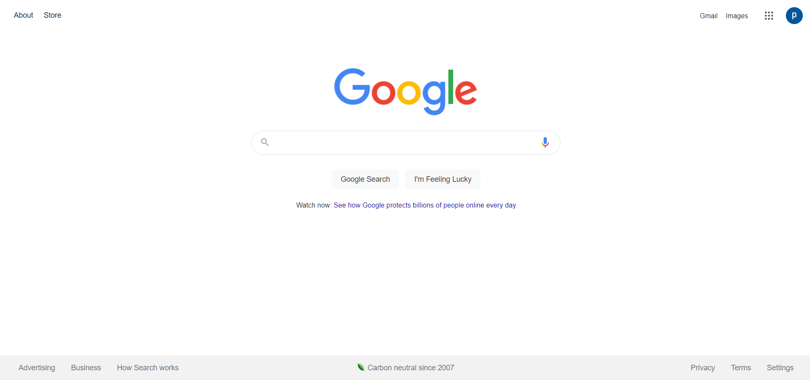

Assignment 4: Contrast, Repetition, Alignment and Proximity
This is my work for assignment 4
Contrast
Amazon
- The contrast of the rotating blue sale image in the background contrasts well with the white boxes displaying other deals in front of the background.
- The color of the blue background sale image contrasts well with the dark color of the products they are trying to sell, which in this case are a black bordered tablet and a black gaming controller. The blue also contrasts well with the white wording of the sale which says, "Stream, play, and watch".
- The contrast of the white boxes with their mostly darker colored products works very well at highlighting them, even in the case where they have a white product which is the white alexa in the bottom left of the screen they added a blue and gold background to make sure it stands out.

Repetition
Reddit
- The repetition of the layout of the 4 popular stories at the top of the screen is well placed, even the repetition of the use of a bold font title mixed with the smaller fonts works well.
- The repetition of each regular reddit article's layout also works well showing their title, number of comments and upvotes as well as other tools which is applied to each reddit article that you see as you scroll down the page which continues on for what seems to be endlessly due to the fact that there are currently around 2.8 million subreddits many of which have plenty of users who create posts everyday.

Alignment
Youtube
- REASON #1
- The alignment of the icons for each video are so well placed that it looks like a grid, this makes it very easy to understand and find a video that interests you almost like a library.
- REASON #2
- The categories on the left and top sides of the screen are well organized allowing you, similar to a library, to find what genre of content you are looking for.

Proximity
Google
- The Google homepage is very beautiful due to its simplicity and the proximity of its tools on the page.
- The company logo and the search bar are directly next to each other surrounded by white space, this amplifies the sense of importance of their main feature which is why people come to their site in the first place, but it also amplifies the sense of simplicity of their site.

In Conclusion
I believe that these 4 websites showed characteristics of all 4 of the categories of web design listed in this lesson because their sites were very beautiful and easy to understand. These characteristics allow for a cleaner website that allows users to focus on whatever purpose the website creator wants them to whether they are trying to sell a product, teach a lesson, display news articles, or even just show them funny videos.